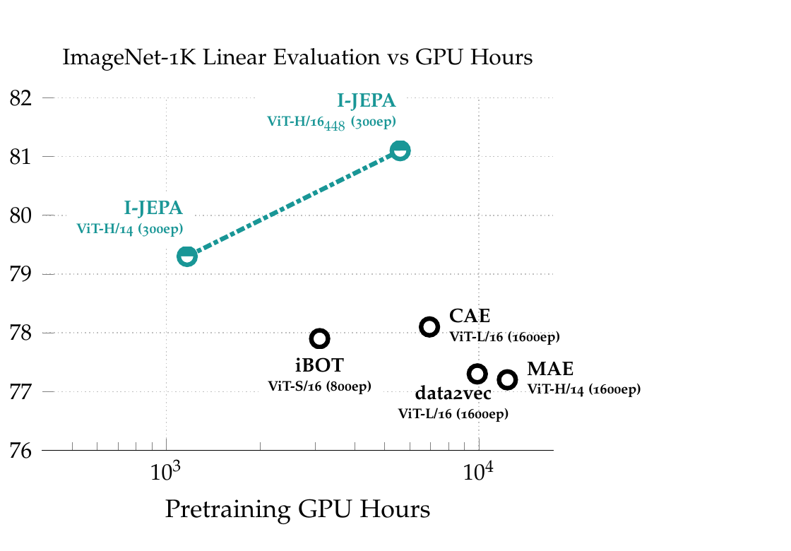
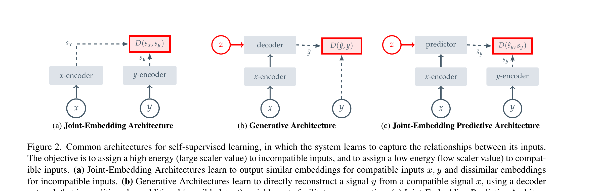
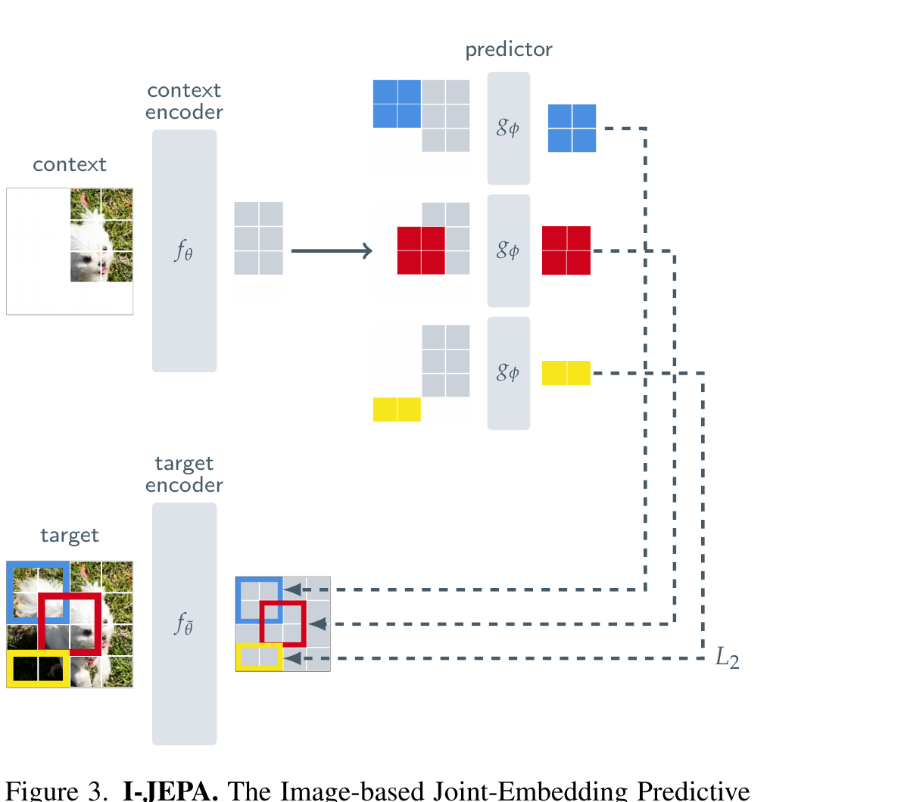
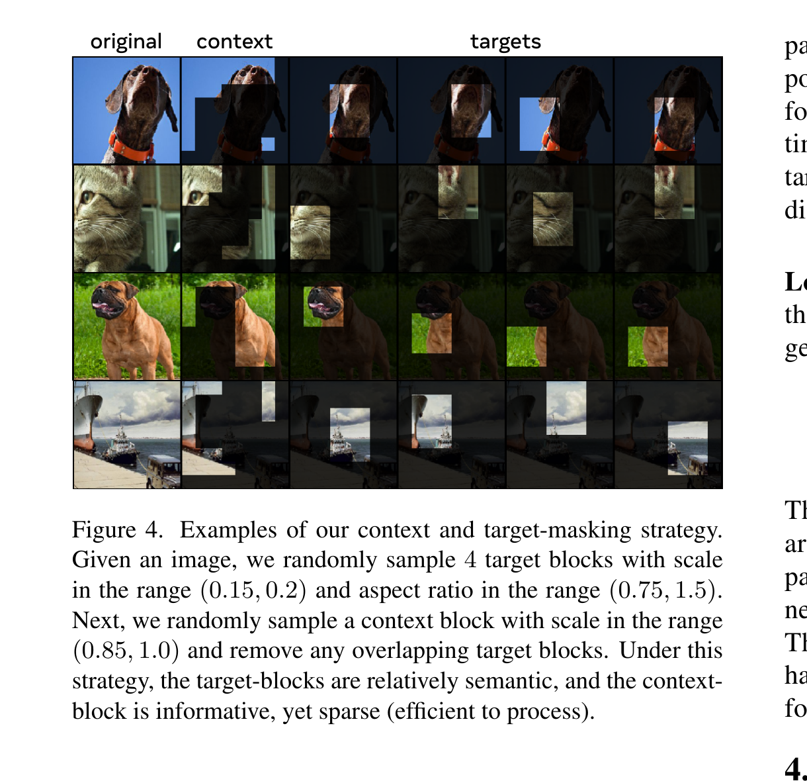
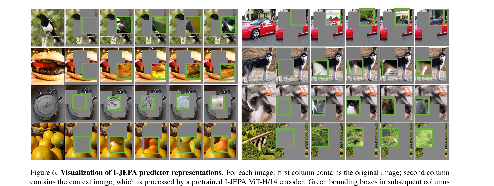
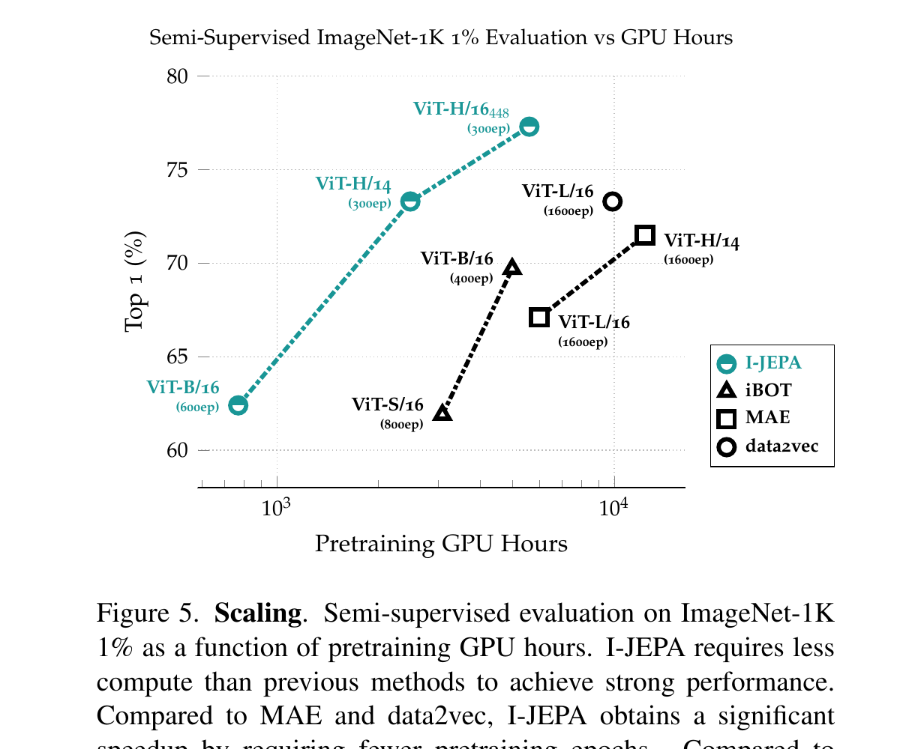

Self-Supervised Learning from Images with a Joint-Embedding Predictive Architecture
Mahmoud Assran, Quentin Duval, Ishan Misra, Piotr Bojanowski, Pascal Vincent, Michael Rabbat, Yann LeCun, Nicolas Ballas · Meta AI / McGill / Mila / NYU · CVPR 2023
上一篇（LeCun 2022）给的是一份"蓝图"——他主张未来的智能体应该用 JEPA（联合嵌入预测架构） 来学习世界模型，并解释了 JEPA 在能量模型框架下为什么能避免"对比学习"或"像素重建"的两条死胡同。 但那篇是 position paper，没有任何实验。
这一篇（Assran 等 2023）就是同一群人（包括 LeCun 本人）把蓝图的最简单情形——单张图片 拿来落地：在 ImageNet 上训练一个真实可跑的 JEPA，叫 I-JEPA（Image-JEPA）。 读完它你能拿到三件事：(1) JEPA 在工程上长什么样；(2) 它和 MAE / DINO / iBOT 这些旧方法的差别在哪； (3) 为什么"在表征空间里预测"这件事，是后面 V-JEPA、ACT-JEPA 一切的起点。
§1 一句话总览
给一张图，遮住几个大块，让模型从剩下的"上下文块"出发， 预测被遮块的表征（embedding）——不是预测像素、不是做对比学习、也不要任何 crop / color jitter 这种手工增广。Loss 是 L2，约束在 表征空间。
就这么简单的一招，在 ImageNet 线性评估上用 ~5×10× 更少的算力就能追上甚至超过 MAE / data2vec / iBOT。 ViT-Huge/14 只要 16 张 A100 跑 72 小时——这是 LeCun 蓝图第一次有真实数字。

展开原文 · Abstract 关键句
"The idea behind I-JEPA is simple: from a single context block, predict the representations of various target blocks in the same image. A core design choice ... is the masking strategy; specifically, it is crucial to (a) sample target blocks with sufficiently large scale (semantic), and to (b) use a sufficiently informative (spatially distributed) context block."
① ViT-H/14 在 16 张 A100 上 72 小时跑完 ImageNet-1K 预训练；
② 比 ViT-S/16 + iBOT 还快 2.5×，比 ViT-H/14 + MAE 快 10×；
③ 不用任何 view augmentation——只用 mask。
§2 承接：从 LeCun 的蓝图到 I-JEPA 的第一块砖
上一篇（LeCun 2022 §3）讲过一件事：自监督学习有四种架构家族——对比型、生成型、JEA、JEPA—— 其中 LeCun 把宝押在 JEPA 上，理由是它能把"无关的细节"丢掉（不像生成模型必须复原每个像素）， 又不依赖手工 crop（不像 SimCLR / DINO）。但他没说怎么训。
这一篇就在回答："如果只看图片，最简单的 JEPA 实例化长什么样？" 答案是： 把一张图切成 patch → 选一块作 context、选 4 块作 target → 用 ViT 预测 target 的表征。 往下读时记住：本文所有设计选择都在围绕同一件事——让目标表征语义足够丰富、 上下文足够 informative，又不引入手工增广。
| 问题（继承自 LeCun 蓝图） | 怎么训一个不是生成式、不是对比式的 SSL？ |
| 本文场景限制 | 单张图片（不是视频、不是动作序列）。最简单的非生成 JEPA 落地。 |
| 输入信号 x | 一个空间上有信息量的大 context 块（占图 85%~100%，去掉与 target 重合的部分）。 |
| 目标信号 y | 4 个大 target 块（每块占图 15%~20%、长宽比 0.75~1.5）。 |
| 预测目标 | 不是 y 的像素，是 y 通过 target encoder 之后的表征 s_y。 |
| Loss | L2 距离，公式简单到一眼就懂（见 §4.2）。 |
如果你只读过 LeCun 蓝图，对 JEPA 的印象停留在"图 12 那张抽象画"——这一篇就把那张抽象画里的每个箭头 替换成了 ViT、L2、EMA 这些工程零件。下一节先用 Fig 2 把"我们站在哪一族架构里"先说清楚。
§3 三种 SSL 架构 · 你必须先看清这张图
上一节说 JEPA 是"四家族"之一。但论文里实际只画了三种——因为对比学习被并入 JEA 了。 这张 Fig 2 是全文最关键的概念图：看完它你就能一句话区分 SimCLR / MAE / I-JEPA。

3.1 JEA · 为什么 SimCLR 系不够好
JEA 有效，但代价是：你必须告诉模型"什么算同一张图"——通常用手工设计的增广 （RandomCrop、ColorJitter、GaussianBlur）造一对 x、y。这些增广针对 ImageNet 上的"以物体为中心、矩形构图" 调出来的，迁移到医疗影像、卫星图、音频时不一定成立。
3.2 Generative · 为什么 MAE 仍嫌"低层"
MAE 这种像素重建非常优雅，但它的 loss 是 ‖p̂ - p‖²——为了把 loss 降下来，模型必须记住"这块草地的纹理"
这种和分类无关的低层细节。结果：MAE 的 off-the-shelf 表征（线性评估、k-NN）通常输给 JEA。论文反复强调一句话：
预测像素是浪费的。
3.3 JEPA · 既不要增广，也不要像素
JEPA 的关键是"把 y 也送进 encoder"——预测的目标是 s_y（一个抽象向量），不是 y。 编码器有权主动丢掉不相关细节，只保留语义。但这马上引出一个新问题： 如果 encoder 偷懒，把所有图都映射成同一个常数向量，loss 也会等于 0——这叫表征坍缩。 §4 整章就是在讲 I-JEPA 怎么防止它。
§4 I-JEPA 架构
上一节告诉了你 I-JEPA 的家族位置。这一节给你具体的零件清单——三个 ViT、一个 EMA、一个 L2。 注意 I-JEPA 没有 decoder，没有 projector，没有 contrastive head——它结构简到不可思议。

第 1 步：从原图采样 4 个 target 块
scale ∈ [0.15, 0.2]、aspect ratio ∈ [0.75, 1.5]，独立采样 4 次（可重叠）。这就是图里左下方块图上彩色框（蓝/红/黄三种区分）。
输入是什么：当前任务提供的原始观测、指令、机器人状态或训练数据。先明确这些输入，才能判断后面的结论是否用了部署时拿不到的信息。
这一步究竟做什么：scale ∈ [0.15, 0.2]、aspect ratio ∈ [0.75, 1.5]，独立采样 4 次（可重叠）。这就是图里左下方块图上彩色框（蓝/红/黄三种区分）。
输出到哪里：一个或多个候选未来、动作或轨迹，以及必要的中间状态。这个结果会交给下一步“再采一个 context 块、去重”继续处理。
为什么不能省略：它把未经处理的原始问题变成后续模块可以计算的输入，是整条链路的起点。
为什么要"大块"？ §6.3 消融过——如果换成小块（block(0.6)），下游精度从 54% 直接掉到 20%。语义只在大尺度上才存在。
第 2 步：再采一个 context 块、去重
scale ∈ [0.85, 1.0]、aspect=1。然后把和 target 重合的部分挖掉——这一步是"去重"，避免上下文里直接看到答案。
输入是什么：来自上一步“从原图采样 4 个 target 块”的产物：一个或多个候选未来、动作或轨迹，以及必要的中间状态。本步骤还会按论文设置读取当前条件、时间步或训练信号。
这一步究竟做什么：scale ∈ [0.85, 1.0]、aspect=1。然后 把和 target 重合的部分挖掉 ——这一步是"去重"，避免上下文里直接看到答案。
输出到哪里：经过本步骤处理、含义更明确的中间结果。这个结果会交给下一步“context encoder 处理可见 patch”继续处理。
为什么不能省略：它承担上下两步之间的接口；缺少它，前一步产生的信息无法以正确格式或正确含义传到下一步。
结果：context 是一个"几乎整张图、但缺了 4 块"的稀疏 patch 集合。这就是论文叫 multi-block masking 的原因。
第 3 步：context encoder 处理可见 patch
把 context 的 patch 喂进 context encoder f_θ（ViT）。它只处理可见 patch，被挖掉的位置不进来——这是 MAE 教会大家的省算力 trick。输出 patch-level 表征 s_x。
输入是什么：来自上一步“再采一个 context 块、去重”的产物：经过本步骤处理、含义更明确的中间结果。本步骤还会按论文设置读取当前条件、时间步或训练信号。
这一步究竟做什么：把 context 的 patch 喂进 context encoder f_θ（ViT）。它 只处理可见 patch ，被挖掉的位置不进来——这是 MAE 教会大家的省算力 trick。输出 patch-level 表征 s_x。
输出到哪里：经过本步骤处理、含义更明确的中间结果。这个结果会交给下一步“predictor 预测 4 个 target 的表征”继续处理。
为什么不能省略：它承担上下两步之间的接口；缺少它，前一步产生的信息无法以正确格式或正确含义传到下一步。
第 4 步：predictor 预测 4 个 target 的表征
把 s_x 拼上一组 mask token（共享的可学向量 + target 位置编码），喂进 predictor g_φ，输出 ŝ_y。
输入是什么：来自上一步“context encoder 处理可见 patch”的产物：经过本步骤处理、含义更明确的中间结果。本步骤还会按论文设置读取当前条件、时间步或训练信号。
这一步究竟做什么：把 s_x 拼上一组 mask token（共享的可学向量 + target 位置编码），喂进 predictor g_φ，输出 ŝ_y。
输出到哪里：一组诊断数值、分类结果或评测分数；它告诉后续模块当前结果哪里好、哪里需要修正。这个结果会交给下一步“target encoder 处理整张原图”继续处理。
为什么不能省略：没有统一诊断或评分，后续模块无法知道哪里出错，也无法公平比较两个模型是否真的进步。
对 4 个 target 块各做一次——所以 predictor 一个 batch 要跑 4 次。每次条件不同（mask token 位置不同），得到不同的预测。
第 5 步：target encoder 处理整张原图
同一张原图不掩码、整张送进 target encoder f_θ̄（EMA 副本）。整张过完之后再按位置切出 4 组 target 表征 s_y。
输入是什么：来自上一步“predictor 预测 4 个 target 的表征”的产物：一组诊断数值、分类结果或评测分数；它告诉后续模块当前结果哪里好、哪里需要修正。本步骤还会按论文设置读取当前条件、时间步或训练信号。
这一步究竟做什么：同一张原图 不掩码、整张 送进 target encoder f_θ̄（EMA 副本）。整张过完之后再按位置切出 4 组 target 表征 s_y。
输出到哪里：经过本步骤处理、含义更明确的中间结果。这个结果会交给下一步“L2 损失，反传更新 θ 和 φ”继续处理。
为什么不能省略：它承担上下两步之间的接口；缺少它，前一步产生的信息无法以正确格式或正确含义传到下一步。
关键：先编码整张、再切，让 target 表征自带"周围邻居信息"，比'只编码这一块'语义高得多（论文 §3 强调过）。
第 6 步：L2 损失，反传更新 θ 和 φ
loss = (1/M) Σ ‖ŝ_y(i) - s_y(i)‖²。用 AdamW 反传，只更新 context encoder θ 和 predictor φ。
输入是什么：来自上一步“target encoder 处理整张原图”的产物：经过本步骤处理、含义更明确的中间结果。本步骤还会按论文设置读取当前条件、时间步或训练信号。
这一步究竟做什么：loss = (1/M) Σ ‖ŝ_y(i) - s_y(i)‖²。用 AdamW 反传， 只更新 context encoder θ 和 predictor φ 。
输出到哪里：参数得到更新的模型，或能供下一轮训练使用的新监督信号。这是图中这条链路的最终产物，随后会进入真实执行、模型更新或指标评测。
为什么不能省略：前面的数据或分数本身不会自动改变模型；必须通过损失函数把误差信号变成参数更新。
target encoder θ̄ 不靠梯度，每步用 EMA 更新：θ̄ ← τ·θ̄ + (1-τ)·θ，τ 接近 1（论文 0.996→1.0）。这是防坍缩的核心，下一节展开。
展开原文 · §3 Method 关键设计原则
"The target representations correspond to the outputs of the target-encoder, the weights of which are updated at each iteration via an exponential moving average of the context encoder weights."
"Note that the target blocks are obtained by masking the output of the target-encoder, not the input. This distinction is crucial to ensure target representations of a high semantic level."
§4.1 多块掩码（multi-block masking）· 让任务"够难也够语义"
上一节说"采 4 个大块、采一个大 context"——但为什么是 4 个？为什么是这个 scale？ 这一节用 Fig 4 给你直觉，然后用消融表证明：换成别的策略 I-JEPA 会塌掉。掩码不是细节，是训练任务的本体。

论文 Table 6（ViT-B/16 在 ImageNet-1% 上线性评估）：
| multi-block（本文） | 4 个 block(0.15-0.2) · context block(0.85-1.0) | Top-1 = 54.2% |
| rasterized | 四象限，1 块当 context 预测另 3 块 | 15.5% |
| block | 1 个 block(0.6) · context = 补集 | 20.2% |
| random | 随机 60% patch · context = 补集 | 17.6% |
差距巨大——掩码策略设计错了，I-JEPA 几乎学不到东西。"大、多、稀疏"是三个并列的关键词。
§4.2 Loss · EMA · 为什么不会坍缩
上一节讲了任务怎么定。但 §3.3 提过表征坍缩这个老问题——只要 encoder 把所有输入映射到常数向量， L2 loss 就能等于 0。LeCun 蓝图（§3.4）讨论过两条路：对比学习（拉远负样本）vs. 正则（VICReg 那套熵约束）。 I-JEPA哪条都没走，它走第三条：非对称架构 + EMA。
- $\hat{s}_y(i)_j$
- predictor 预测的第 $i$ 个 target block 里、第 $j$ 个 patch 的表征
- $s_y(i)_j$
- target encoder（EMA 网络）输出的对应"答案"表征
- $B_i$
- 第 $i$ 个 target block 包含的所有 patch 索引集合
- $M$
- 归一化常数——所有 target block 的 patch 总数
参数更新规则（注意非对称）：
- $\theta,\phi$
- context encoder 与 predictor，通过预测损失正常反向传播。
- $\bar\theta$
- target encoder 参数，不接收梯度，只追踪 online encoder 的指数滑动平均。
- $\tau$
- EMA 动量，从约 0.996 逐渐趋近 1；越大表示 target 变化越慢。
- 非对称性的作用
- 为 predictor 提供缓慢移动的目标，降低两支同时追逐彼此而坍缩到常量表示的风险。
如果 context encoder 想"偷懒"把所有 s_x 输出成常数，target encoder 通过 EMA 跟着也变常数 → loss 仍能为 0，看似没救。 但 EMA 有一个滞后：θ̄ 永远落后 θ 一拍。这意味着在任何瞬间，target encoder 的输出和 context encoder 的输出都不会完全一致。这种"动态不平衡"让 predictor 必须真的学习从 s_x 推断 s_y——常数解只在 θ=θ̄ 完全静止时才成立，而这种静止状态在 SGD 优化中是不稳定平衡点。
实验上：BYOL（2020）已经证明这套"非对称 + EMA"组合在视觉 SSL 上 work。I-JEPA 把它从 JEA 搬到 JEPA。
展开原文 · §3 Loss & 参数更新
"The use of an exponential moving average target-encoder has proven essential for training JEAs with Vision Transformers, and we find the same to be true for I-JEPA."
§5.1 它真学到什么了？· Predictor 可视化
上一节我们让模型在表征空间里预测 4 个目标块。但你可能怀疑——"它到底预测出了什么？" 毕竟我们既看不到像素也看不到标签。Fig 6 用一个巧妙的事后诊断回答了这个问题。
预训练完成后，冻住 context encoder 和 predictor， 另外训一个 decoder（用 RCDM 框架，一个生成模型）把 predictor 输出的表征反向映射回像素—— 注意它不是 I-JEPA 的一部分，只是事后探针（probe）。decoder 对同一表征采样多个像素重建， 多次采样里"稳定不变的部分" = 表征里真正编码的信息。

这是 I-JEPA 学到语义而非像素的视觉证据。 ① predictor 正确捕获了"位置不确定性"（它知道该预测物体的哪一部分）； ② 它产生带正确姿态的高层物体部件（鸟背、车顶、狗脸朝向）； ③ 它主动丢弃纹理、颜色、背景这些不必要的细节。
如果换成 MAE，decoder 还原出来会强迫每个像素都准——这就是为什么 MAE 表征的语义性弱于 I-JEPA。
§5.2 实验结果 · 三个数字
概念讲完了，现在该看分数。本文实验非常多（Table 1-7），但只有三件事真正重要： (1) 比同类无增广方法（MAE / data2vec）显著强； (2) 接近甚至超过有增广方法（DINO / iBOT）但便宜得多； (3) 在 low-level 任务（深度、计数）上反超过增广派（这是个意外）。

§5.3 关键消融
| 消融 1：在哪个空间算 loss（Table 7） | 表征空间 = 66.9% · 像素空间 = 40.7% → 差 26 个点。这是 JEPA 的灵魂——loss 必须算在表征上。 |
| 消融 2：掩码策略（Table 6） | multi-block = 54.2% · 第二名 block(0.6) = 20.2% → 差 34 个点。掩码设计也是灵魂。 |
| 消融 3：预训练数据（Table 5） | IN1k → IN22k 后 ViT-H/14 在 INat18 从 47.6 → 50.5。I-JEPA 受益于规模。 |
把 loss 从表征空间换成像素空间，或把多块掩码换成单块/随机——任一改动 I-JEPA 都会塌成不到一半的性能。 这两条说明："在抽象空间预测、用结构化掩码"不是细节，是 I-JEPA 全部能量来源。
§6 ★ 与 LeCun 蓝图的呼应
这一节回答你一开始的问题——这一篇和 LeCun 那篇怎么衔接？ 按 LeCun 蓝图的章节顺序，I-JEPA 在每条主张上都是第一份"实证"答卷。
| LeCun 2022 §3.1（图 8） SSL 应该用 EBM 框架统一 |
I-JEPA Fig 2：把 JEA / Generative / JEPA 都画成 D(·,·) 红框 EBM。直接复用图谱。 |
| LeCun §3.4（图 11） 对比 vs 正则两条防坍缩路径 |
I-JEPA 都没用——走第三条：非对称架构 + EMA。把 BYOL 思路从 JEA 搬到 JEPA。 |
| LeCun §3.5（图 12） JEPA 抽象架构 |
I-JEPA = 这张抽象图的最简单图像版。x = context、y = target、z = mask token。 |
| LeCun §3.6（图 13） JEPA 必须丢弃不可预测细节 |
I-JEPA Fig 6 给出视觉证据：predictor 学会保留物体姿态、丢弃像素纹理。 |
| LeCun §3.8（图 15） H-JEPA：分层 JEPA 做长程预测 |
I-JEPA 是单层、单步。后续 V-JEPA / H-JEPA 才把时间和层级补上——这是路线图的下一步。 |
| LeCun §2.1 World Model 是架构最大的模块 |
I-JEPA 不直接做 World Model。它做的是 World Model 的预训练表征—— 先学一个语义空间，然后在这个空间里预测、规划。这是 LeCun 路线的"第 0 步基础设施"。 |
I-JEPA 本身不预测动作，所以不是 VLA。但它对 VLA 的意义在于： 它给"在抽象空间预测未来"提供了第一个 scalable 的工程范式。 后续延伸：
- V-JEPA（2024）：把 I-JEPA 时间化——预测视频未来帧的表征，不是像素。
- ACT-JEPA（2024+）：再加上动作条件 z = a_t —— 这才是 World Model 的雏形。
- π₀ / π₀.₅ 系：虽然路线不同（用 flow matching 在动作空间预测），但思路上和 JEPA 互补：JEPA 预测"会发生什么"，flow matching 预测"我该做什么"。
§7 关键收获
- JEPA 不是新概念——LeCun 蓝图早讲过；I-JEPA 是它第一个工程实现。
- "在表征空间预测"是关键。换成像素空间 → 性能从 67% 掉到 41%。
- 多块掩码是任务设计的灵魂。target 必须大、多、稀疏；context 必须大、informative。
- EMA + 非对称架构解决了表征坍缩，绕开了对比学习和 VICReg 那套熵约束的复杂度。
- V-JEPA（Bardes et al. 2024）—— I-JEPA 的视频版，加入时间维度。
- VICReg（Bardes et al. 2021）—— LeCun 蓝图里另一条"正则防坍缩"路线的工程实现。
- BYOL（Grill et al. 2020）—— EMA + 非对称 trick 的源头，I-JEPA 的"灵感外祖"。
- MAE（He et al. 2021）—— 像素重建的代表，I-JEPA 全文都在和它对比。